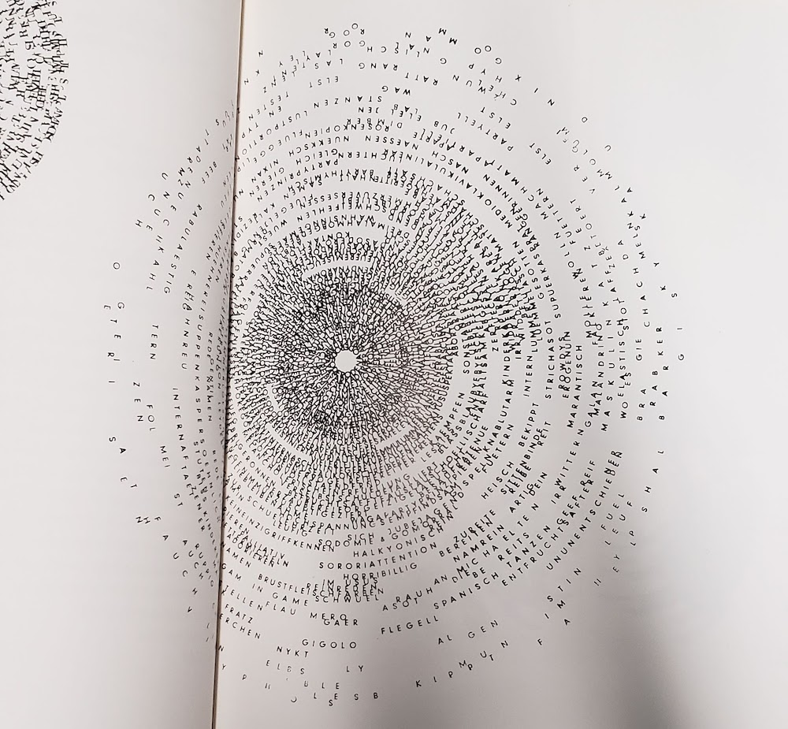

thoughts & questions
Stephen Nixon came to WashU to give a little talk last Friday.
His point was basically:
Be a human.
It was pretty neat getting to chat with a recent graduate of the Type Media program. Coincidentally he wrote the Drawbot notes that I followed earlier in the year. Designers are cool and helpful. Plus he made a sick blackletter font out of pizza emojis. What a dude.
Again I wonder how I ended up at WashU, and then somehow the Type & Letterform class, and then somehow the design program, and—
Education is a huge privilege.
It’s “easy” to work hard when you like what you’re doing. I get lost when I follow the herd, but when I follow the work, it all makes sense. It’s all traceable, and it’s all honest.
So yeah keep making stuff that you’re inclined to make. And believe in something.

— early result from charette
I am still excited that the CSS typeface is even a project. It’s just really fun to see all the possibilities that arise from messing around in a text editor, and exploring another way to make type is just fun fun fun.
The versions I had on Monday made me realize that I was a little too oriented on making variable and layerable fonts, like Typotheque’s History. The crit reminded me that the project was about distilling microinteractions, but I’m glad I was given the space to make the different fonts. It’s so easy to keep adding, but distilling isn’t that hard—once you arrive at a solution. Getting to that confident point requires a lot of trials. I really liked how this project was paced, and how it was all about experimenting then letting the form of the letters and concept guide the decision for choosing the right animation/interaction over a novel one.
How can the rectangular screen be transformed to feel edgeless? How can the connotations of “infinite scroll” be changed?
Some comments also had me consider the materiality or physics of the webpage again. In the charette I had a version that stretched the letterforms vertically. Ben suggested adding that axis into the randomized glyph width version I showed. I was considering the expandable horizontal space, but not quite the vertical, which is kind of odd considering the common structure of the vertical infinite scroll (and vertical scroll in general over horizontal scroll). I’ve been thinking about the unbounded webpage a bit.
Using the browser not only for display and search but also tool-making and physical object production
Jonathan also mentioned how I could use the browser to draft a poster, possibly for the poster class I’m taking. Later I realized that he was getting at using the browser and HTML/CSS as a tool for creating material objects. Amazing. Using code to make generative art is a pretty common thing, but I had not thought about using the browser for that, even though it’s basically the same means. It’s just a different language of HTML/CSS and Javascript. Getting away from the conventions of the browser can be difficult when you’ve been using it since childhood.
What can you do in the browser that you can’t do in print?
Another thing I need to consider is how the letterforms interact with the space and the background. The white page is the print and digital default, but there are so many opportunities for dimension, like moving images.
There’s too many possibilities in this seemingly endless space. It seems like the only limit is one’s knowledge. What are the limits and edges of the internet? I keep trying to understand it in terms of it’s basic modules. Microinteractions and pixels are start, but those can be broken down even further. What are the atoms and simple machines of the digital space?
“Poems are not meant to be functional. Poems are more exploratory, and poems are expressive and very human. We looked at code that way.”
— Taeyoon Choi
Taeyoon also specifies my (and the general) idea of code as language by considering it as figurative language. The way I see it and have been approaching design is a visualization of language. It’s all metaphor. That’s why coding is nice. It feels like writing. It’s a different, more direct translation of written word to form.
How can the process of design also be the metaphor?


— gifs made with Drawbot from this year

— mix CD I made in high school
Thoughts so far—
I’m not really interested in closed-control or specifically designed outcomes. Even if the outcome is unexpected for other people, it’s more satisfying when the outcome is unexpected for everyone. I want to learn from other people’s makings as much as my own. I’m interested in open-ended systems. It’s also why I’m interested in tools and type design. Tools carry the creation of something else. A typeface needs to be used, not just displayed, and it’s meaning changes as it is used. Letters are sensitive but not precious.
I still keep thinking about the idea of text-based communities. What could they be, beyond a forum or something like Twitter?
What is truly native about the browser?
A lot of sites function to redirect us to content. What about stand-alone sites? How can an experience be native to its environment, rather than a metaphor of something that exists? Everything is metaphor, a translation. What about the raw materials and ideas of the internet?
That’s what atom≠pixel means: the base units of digital and analog are not the same, so the larger structures created from that are not equivalent. So why attempt translation from physical to digital? Basically, art serving to be representational vs. art as art.
I’m wondering about making the intangible structures of the internet/browser explicit, its expanding rectangles, link pathways, but also its relationship to the whole world—because again, the internet has expanded the dimension of the world; it’s not another, separate world.
So instead of thinking of the internet as branches of “walled gardens”, I’m trying to think of it as one room expanding (like in the Sims 4…).

Because the webpage or Google Doc is an organic (but potentially immortal), editable document, eternal as the same object but ephemeral in its appearance, function, state, etc. Like a piece of land. That can be copy and pasted. But not named the same.
What is natural about the internet? It’s completely man-made. We’ve built this expansion, but do we understand it?
I’m seeing why investigating the internet for what it is, content-wise and structurally, rather than whether it’s good or bad is a way of understanding it. Since the internet is not a separate world but a layer of it, it will proportionally reflect the dominant culture of commercialism and commerce. But it’s not just that (and it’s not realistic to think of it as something where commercialism and commerce are the minority).
The internet vs. an internet: it’s whatever you want it to be.
I’ve been more curious about translations from digital to physical that expose the instable structures of the internet and that highlight how the properties of screens and physical structures are different. But what I’ve been making more of are translations from physical to digital, like GIFs of old projects.
I need to explore going from digital to physical I think. I’m still thinking about a phone-sized, non-linear zine and printing some sort of infinite scroll with a commercial thermal receipt printer.
I need to just do it. Because the work is more coherent than all these thoughts.

— scanimation birthday card; undoubtedly inspired some of my scroll charettes
Good ol’ Jim came to St. Louis and gave a talk / exhibited Type Hike at UMSL.
I learned about kopimism. Again questioning what the internet has done to religion.
To the main point: Jim talked about how Squarespace and Instagram made Type Hike possible due the short timeframe they had to make it and the amount of manpower they had (2 people). This was a perspective that I was sort of looking for. I kind of have a bias against quickly constructing templated sites and the amount of promotion on social media. But that’s just me and my purposes. If Squarespace and Instagram can support nonprofits making cool things and connecting people, why fight it. It’s all about how they’re used (mind the motivations of most of the users people). It kind of goes back to creating alternate systems instead of fighting against a system that wasn’t designed for your purposes anyway.
I am also put to sleep by elongated discussions on branding for the most part, so Jim’s talk on experimental processes and being an independent designer was nice. Most commercial design caters to safe, unprovocative design. If you don’t want to do that, then change your environment. Design is what you choose it to be, if you’re willing to accept the compromises. People have trouble with the demands of commercial design and the urge for personal expression and experimentation. They get trapped in the system. Jim went to grad school after getting sick of making “visual garbage” at a design firm and then just started building his practice after that. Easier said than done. But the point is to go for it. Maybe you’ll get lucky.
Don’t dawdle.
I wish he talked more about being an educator, so I asked him how teaching affects his practice. He said that it keeps him honest since you should practice what you preach, that it makes sure he doesn’t remain complacent, and that he’s always exposed to new ideas. I also wonder if it’s a kind of antidote to doing commercial work. Which I am at theoretical odds with.
Biggest takeaway from the dude is to be a supportive human.

For a while I was thinking of making a non-linear phone-sized zine in conjunction with a printed infinite scroll for my capstone. It’s more of an art piece than a design piece. But after the capstone meeting I kind of thought I wouldn’t really want to spend an entire semester on that, and it’s more of a project I would do on the side… I need to just make it. What I’m trying to say with that idea will emerge more once I make it. I also haven’t really done much with alternative tools (like a commercial receipt printer) besides small Arduino things and I’m more interested in creating a digitally native project than a print one.
I’m still interested in the form and structure of digital media, but I really ache to do something directly with letterform. I think I’m being timid by not making a typeface. Because really that’s what I want to do. So I am probably going to do that. Type is all about rules and parameters. That’s what makes it manageable to make. And what makes it fun. The other exciting thing is that type reflects culture and technology. Its form is influenced by how it’s made. Part of that includes the maker’s tendencies. This all sounds pretty obvious. But basically I’ve been making things with rules and shapes and language since forever. It’s why I was originally a math major. But making rules is way more satisfying than working within predetermined ones. So making a typeface makes a whole lot of sense.
I’ve been thinking a lot about systems. So I think a parametric typeface would be really interesting, a system of binary switches. It wouldn’t be anything groundbreaking or completely new, but that’s kind of what a typeface is. For now it will always be based on the alphabet.
I’ve worked in systematic ways of making type before in terms of modular strokes (stencils) and modular counter shapes on the same starting proportion of a square. My CSS typeface was about applying a strict and simple set of rules on the slab serif form. And this past summer I got some experience with the actual font-making side (though there’s still lots to learn, as always). There are many rules I can set to make making a typeface totally manageable, like doing a monospace so that I don’t have to spend time kerning or creating a proportionally modular system.
I guess I’m thinking of making type as a program (a phrase I’ve seen before; need to reread this article). Can I sever it from its analog roots? Probably not but I want to make a type that can really only exist on the screen. Digitally native. It also needs to be contemporary in some way. In conversation with the now. So I’m not really interested in doing a revival; that’s more of an exercise. Undoubtedly my typeface will need to be informed by precedents though.
I just really need to make a typeface.


— Seh-Texte by Ferdinand Kriwet (1962), part of concrete art. Picture from IDEA: typography today.
The Herb Lubalin Study Center has all the Dot Dot Dot magazines, a lot of the IDEA mags, and Emigre publications—another reason why 2 hours there is not enough time.
In Emigre 67 Rudy VanderLans interviews the type designer, writer, publisher, educator Peter Bil’ak. Bil’ak talks about the design and ideation process of making Dot Dot Dot and about why he makes type:
“It’s a constant oscillation between intuition and intellect, never just one or the other.”
— Peter Bil’ak, unedited interview here
“[Fedra (a typeface by Bil’ak)] is not directly repeating the past, nor is it predicting future trends. It is simply the product of now.” What makes a typeface contemporary? It’s not definable. It just is.
Right now I am kind of scattered. When I think too much, I stop doing. But when I feel like I am not thinking enough, I don’t feel as intentional, rational, purposeful. Every doing is a decision informed by something, but it doesn’t take much for me to slip into conscious thinking. I can really only articulate what I’ve done after I’ve done it. Trying to define it before it’s made sets these limiting, somewhat impossible limitations. It’s basically trying to predict the future when really what matters is what you’re doing now. This idea of emergence used to be pretty natural to me but it’s been getting a little harder and harder because of the pressures of the future. Too much future. Not enough now.
What I’m starting to learn through the interaction capstone is to follow the essence of a form rather than trying to shape it to be something else. It’s been more about expanding and resolving a form rather than solving a problem, which is a nice way of working, especially when you consider the purpose and possibility of an educational environment in comparison to a commercial/professional one.
One thing about type design that Ben Kiel told me (that Tal Leming originally told him) is that the type will reach a point where it starts to speak. The form itself will lead the way. It’s kind of mysterious, but makes a lot of sense after it happens. It’s not a conscious, fully articulable thing in the moment. And it’s kind of how my whole life has panned out basically. You start out with a plan but it can never be determined completely.
So there’s always been this emphasis on process over outcome, but even that is starting to become fuzzy. It’s a tricky balance.
Maybe it’s just all too much thinking, not enough making. Easier to observe what can be seen. Or to just not criticize too much in the moment of making but after the thing is made to exhaustion. Of course that was easier when I didn’t know as much about design or how to talk about it. Ignorance is bliss.
I guess the approach I need to take is to just make, as I used to, without thinking too much about the why and the intent in the beginning. As much as that may seem to oppose Rationalization and Logic of design, I think it’s more honest to say that a good chunk of meaning and reason comes of out interpreting a thing after it’s made, after we can step out of the context of its making and view it afterward. I mean, that’s what a crit is. I don’t know. Maybe this is all a weird kind of performance anxiety. Things just always go better when I just go my own way and make stuff without outside expectation.
— Beowolf font by LettError (Erik van Blokland & Just van Rossum)
— Bitmap type from first MacOS

This past week has been trying to dig further into what “digitally native” type means, and trying to figure out a wording that makes this idea accessible and understandable without undermining it.
When I think of precedents for digitally native type, bitmap fonts are the first. They reflect their environment’s constraints and aren’t bitmap for the sake of being bitmap — they had to be bitmap. That’s digitally native, not imitative like “bitmap” fonts made today, which look inherently dated. Such a rigorous constraint to letterform means that glyphs first try to follow the general structure of a letter, the very skeleton.
Serifs and contrast and optical correction don’t make a letter; they make a typeface that suits convention to some degree. What makes a letter is its basic structure that makes it recognizable as such. An E is one vertical line with 3 horizontal lines attached to the right of it — even that definition may not be specific enough. What happens when different language is used to describe letterform? Instead of strokes and serifs, what if boxes and attachments were the terms?
Another typeface I consider to be digitally native is LettError’s Beowolf. It directly exposes letters as data, code, points. Randomness and animation and the layering of light-based color. But still visible is its traditional roots: serifs and contrast.
Is seriffed type on the screen skeuomorphic?
The common practice in type design today is to revive or heavily reference historical form and convention. How else can type design be practiced, particularly in regard to web fonts? How can we look more toward the now? How does the digital environment affect type and how can the process of type design and letterform itself attempt to reflect the qualities of the contemporary digital environment? These are questions of curiosity rather than opposition or pursuit of a dogmatism.
(November 16th)
Capstone ideation thus far:
Repeatedly asking the wrong questions
But it was still valuable to ask them anyway.
The questions that keep sticking around are the ones with no definitive answer. Hence circulation and rumination. For some reason I don’t take that as a cue to move on. But now I know I need to move in a specific direction and think in more concrete ideas instead of abstract theories. Nothing like deadlines to motivate decision-making. Though good things take time, there is not always time. Good things also take experience to make.
Ben framed it really well: what I should be aiming for is an instructive experience. Learning is what drives me the most and has the longest-lasting impact. It means way more than thoughtlessly making cool-looking things. I wasn’t really convinced on the ideas I had for longer than a day because they were more about proving a naïve point instead of learning something new and gaining an insight. The truth lies in the process. Outlining objectives will help me determine which project to pick. It’s far less dogmatic to approach it this way, which is why my earlier ideas just didn’t feel quite right.
How could I forget,
Learn learn learn (and have some fun)
The balance I’m trying to aim for is manageable form, coherent content/concept, interesting/based on something I know I like, appropriate for long-term work, involves personally relevant precedents and interesting historical examples.
One thing I’ve noticed is that recently read things really influence what I consider a good idea for a day. I’ve started looking at enduring interests instead and digging at why certain projects still feel significant even if I’ve improved since making them.
Craft and automation
What is the role of craft today? What can craft mean?
It could be seen as a resistance against the inhuman speed of automation. Craft is largely repetitive, demanding patience and precision and care from the crafter. These tasks could be automated, but at times the emotional care put into making physical objects can be absent. Each mistake from the machine is a huge distraction, just as a craftsman’s carelessness. Automation is a means of getting to the middle of the process quicker, not always as a means to the end.
How can automation be poetic and not just industrially efficient?
In bookbinding we had to make two coptic-stich books in about 2 weeks basically. The binding takes longer to do since it’s designed for larger books, and it also requires more practice to make a decently put-together book. Our previous projects had max 15 pages of content, and for this one we were required to make two books with, at minimum, 120 pages each. So there was this problem of practicing the binding and having to fill several pages. There was no way I was going to fill the pages with hand-drawn things or collages and whatnot, at least not in a personally conceptually fulfilling way in such a short amount of time.
I probably ended up spending just as much time as anyone else who drew in their books. I chose to quantify a lifetime in a book by automating a year’s worth of dates for each spread of my book. I ended up making a 206 page book, which meant more time required for binding, since the coptic bind is threaded signature by signature. The book is an inherently modular and repetitive structure and bookbinding is consequently a repetitive task: cutting sheets of paper, scoring and folding each sheet, creating signatures, punching holes in each signature, repeating stitching patterns and motions of the arms.
It was kind of jarring designing the book. I used a spreadsheet to generate a year’s worth of dates starting from September 9, 1997 (the day I was born). Then I just used find and replace in InDesign for each spread to change the year. Passing from 1997 to 2018 and finally to 2096 (an ambitious year to live to) was surreal. 2050? What the heck is 2050 gonna be like? The years just gradually increase with each page turn. The days that I had already lived were striked-through. Future dates to be crossed out post-printing will be crossed out with a pen. It’s an impersonal journal of sorts. No day’s content, just an acknowledgement of its passing.
Some people were freaked out in thinking that I typed out my entire book date by date. The scale and the repetition of the book is inhuman. But the craft was entirely hand-done/body-generated, including the guillotine-cut text block (which destroyed one edge of my book). One person called it an uneconomical calendar, which I didn’t even think about. I saw the text block as a poetic thing, less so of a utilitarian design. The book isn’t “finished” until I die.
Anyway it’s always nice to make a thing that actually garners a reaction of some sort and that considers the form of the book. I was questioning the value of printed type specimen, but it they’re actually quite valuable for archival purposes. Archiving digital material is still a volatile thing. Books are great. They won’t die, even if reading changes.

— the 404 page for The Creative Independent
Now I’m trying to figure out how the form of the book can influence web design—but I’m thinking it should largely remain separate. How the web and coding can influence book design/content, though, is the more intriguing question.
— found on Erik Carter’s Are.na channel “Do you want typography or do you want the truth”; block is by Desmond Wong, which he found on the terrifying website Fight for UX
Hilarious. But oh man. Is UX only accessible through homogenous practices?
Reminds me of Laws of UX. And my reaction to that was skeptical, but not as negative as my reaction toward Fight for UX, which uses American propaganda figures to relay their message for a “humanist” but aesthetically militant (and perhaps fundamentally capitalist and impersonal) view toward UX.
It also reminds me of how the microinteractions textbook can be somewhat dogmatic. It’s all in service of the “user”. I mean it’s not all untrue, but it’s not quite encouraging of redefining best practices and expanding conventions. Why is it important to look beyond convention if it’s accessible? Because conventions are products of a different time that may reflect misaligned values. Re: consumerism and capitalism.
Why do I resonate with Taeyoon Choi and the School for Poetic Computation moreso than these practical, industrial, potentially superficially empathethic/humanist UX guides?
Control Care.
The language these sites (Laws of UX, Fight for UX, School for Poetic Computation), visual and written, is also all really powerful in how I choose to interpret them.